Cloud Architecture,
SOA & Application Engineering
An exhaustive study of cloud service layers (IaaS, PaaS, SaaS), 12 core requirements, Service-Oriented Architecture (SOA), parallelization pipelines, multi-tier topologies, Amazon RDS, and AWS CDK multi-language engineering.
Curriculum Roadmap: 9 Core Modules
Complete mastery trajectory covering layered abstractions, middleware, distributed concurrency, and AWS cloud engineering.
Cloud Layers & Models
IaaS hardware abstraction, PaaS runtimes, SaaS subscription software, BPO, and the Gmail 8GB virtualization case study.
12 Cloud Requirements
From Requirement Analysis, Scalability, and Availability to Multi-Tenancy, Elasticity, Compliance (RBI), and Monitoring.
Service Oriented Architecture
Loose coupling, Service Consumers, Service Providers, Service Registry (UDDI/Eureka), ESB, and E-Commerce sequence flows.
Parallelization in Cloud
7-Step parallel pipeline, Bit/ILP/DLP/TLP types, Multi-core vs SMP, application checkpointing, and automatic parallelization.
Multi-Tier Architecture
1-Tier (robot toy), 2-Tier (desktop banking), 3-Tier, N-Tier, and modern AWS Serverless Multi-Tier (API Gateway + Lambda + DynamoDB).
AWS Ecosystem & RDS Deep Dive
Amazon RDS (Aurora, MySQL, PostgreSQL, Oracle), T3/M5/R5 instance classes, GP2 vs IO1 storage, Multi-AZ high availability, and S3.
AWS CDK & 5 SDK Runtimes
Infrastructure as Code with AWS CDK. Programming support for Java (SDK v2), Python (Boto3), Ruby, PHP, and Node.js.
Cloud Tools & Other Platforms
Google App Engine (GAE runtimes), Google BigTable multidimensional sorted map, Microsoft Azure, and Aneka PaaS enterprise cloud.
6 Principles & Exam Prep
Reasonable Deployment, Continuity, Elastic Expansion, Performance, Security Compliance, Continuous Ops & Viva Q&A.
The 4 Functional Layers of Cloud Architecture
From raw bare-metal hardware and network fabrics to autonomous business process outsourcing.
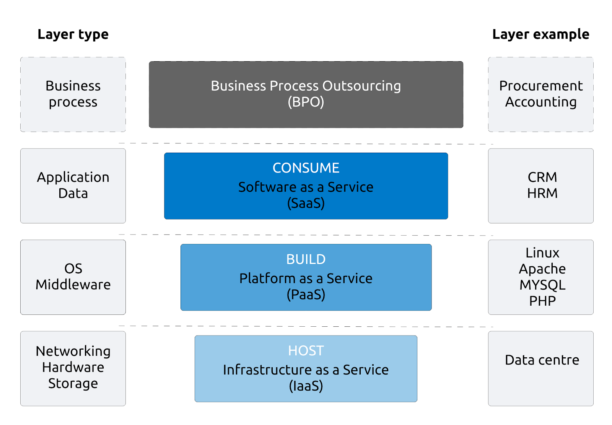
Click diagram to view ultra-high resolution lightboxLayer 4: Cloud Business Process / BPO
Business ValueEnd-to-end automated business workflows delivered via cloud, such as automated payroll, billing, CRM pipelines, and supply-chain logistics integrating multiple SaaS tools.
Layer 3: Software as a Service (SaaS)
End-User SoftwareComplete turnkey software hosted centrally and delivered over the web browser or mobile app on a subscription basis. Zero local installations or patch management required.
Layer 2: Platform as a Service (PaaS)
Developer RuntimePre-configured execution environments, database management, middleware, and automated build/deploy pipelines. Developers only supply application source code.
Layer 1: Infrastructure as a Service (IaaS)
Hardware & NetworkVirtual machines, bare-metal servers, raw block/object storage, and software-defined networking (VPCs, firewalls). The hardware foundation on which all other layers are built.
IaaS Foundations & The 90% Resource Utilization Paradigm
Why virtualization fundamentally changed data center economics compared to traditional web hosting.
What Distinguishes IaaS from Traditional Hosting?
In traditional web hosting, physical servers are purchased with fixed capacities. Servers frequently sit idle at night or during non-peak hours, operating at only 10% to 15% utilization.
IaaS scales compute, storage, and bandwidth with near-zero marginal cost through massive pooled clusters.
Enables IaaS cloud providers to utilize up to 90% of physical computing resources across pooled workloads.
Key IaaS Architectural Capabilities
- • Self-Service On-Demand Provisioning: Spin up compute instances via web APIs in seconds without human administrator intervention.
- • Dynamic Resource Scaling: Automated elasticity to add vCPUs, RAM, or storage volumes attached over high-speed networks.
- • Metered Utility Billing: Billed strictly per-second of instance usage, network egress gigabytes, and disk storage.
Case Study: Gmail's 8GB Free Storage Revolution
When Google launched Gmail offering 1 GB (and quickly expanding to 8 GB+ free storage per user), competitors like Yahoo and Hotmail were offering merely 2 MB to 4 MB! Many originally thought it was an April Fools' joke.
PaaS: Developer Runtimes, Middleware & Abstraction
Eliminating server management so developers can focus 100% on writing application business logic.
Unified Dev Lifecycle
PaaS provides a complete cloud environment allowing engineering teams to develop, test, stage, and host applications in the exact same environment without environment drift.
- • Integrated CI/CD pipelines & git-push deployment.
- • Automated buildpacks that compile code into containers.
- • Zero operating system patching or kernel tuning needed.
Managed Middleware & DBs
PaaS bundles database management, messaging brokers, caching engines, and runtime frameworks as pre-wired managed services.
- • Built-in relational (PostgreSQL, MySQL) & NoSQL databases.
- • Embedded message queues & event streaming.
- • One-click SSL termination and automated DNS routing.
Autonomic Elasticity
The platform monitors incoming HTTP traffic and CPU load, automatically scaling application worker instances up or down.
- • Scales to zero during inactivity to save costs.
- • Built-in health checks and automatic bad-node recycling.
- • Multi-tenant shared infrastructure with strict tenant sandboxing.
SaaS: Multi-Tenancy, Zero-Install & Subscription Model
Transforming perpetual software licenses into global, evergreen, browser-accessible services.
Core Architectural Characteristics of SaaS
Customers pay per seat, per month, or based on consumption rather than purchasing expensive upfront perpetual software licenses.
Accessed directly through standard web browsers. Upgrades and security patches are applied server-side instantly for all users worldwide.
A single application instance and database schema serves thousands of enterprise customers (tenants), using strict logical data separation.
Traditional Enterprise Software vs SaaS
| Attribute | Traditional Software | Cloud SaaS |
|---|---|---|
| Installation | Local CD/Installer per PC | Web URL / Zero install |
| Upgrades | Manual, costly, risky | Continuous CI/CD rollout |
| Cost Model | High initial CapEx | Predictable monthly OpEx |
| Accessibility | Tethered to office LAN | Any device, anywhere 24/7 |
Real-World SaaS Titans
Salesforce CRM: Pioneer of SaaS since 1999.
Microsoft Office 365: Word, Excel, Teams delivered over web & cloud.
Google Workspace: Gmail, Google Docs, Drive real-time collaboration.
Spotify / Netflix: Consumer streaming entertainment SaaS.
Cloud Service Models: IaaS vs. PaaS vs. SaaS
The fundamental division of control across the 8 layers of cloud computing architecture.
Cloud Service Models & Shared Responsibility Architecture (IaaS vs. PaaS vs. SaaS)
Control boundaries across the 8 technical layers: who manages the kernel, runtime, and application data.
Sysadmin configures OS, firewalls, and runtime. Maximum architectural flexibility.
Developer pushes code; platform automates scaling, OS security, and runtime upgrades.
End users access applications over HTTP with SLA guarantees and zero ops overhead.
Cloud Application Requirements: Steps 1 – 4
The core foundation: establishing clear objectives, elastic capacity, near-zero downtime, and transaction reliability.
Requirement Analysis
Identify the core business problem and objectives. Determine user personas, peak usage volumes, and workload characteristics.
Online learning platforms (Coursera/Udemy) identifying concurrent high-bitrate video streaming and interactive quizzes during peak hours.
Scalability Requirement
Handle expanding workloads seamlessly. Compute, memory, and database connections scale dynamically without throughput loss or latency regression.
During nationwide online exams, system automatically spins up 50+ EC2 instances and read replicas behind an Application Load Balancer.
Availability Requirement
Application must remain accessible with near-zero downtime (99.99% "four-nines" SLA) across Multi-AZ architectures with automated health probes and failover.
E-commerce giants (Amazon, Flipkart) maintaining 100% uptime during annual flash sales, avoiding catastrophic revenue and trust losses.
Reliability Requirement
Perform consistently without crashes or data corruption under sustained load. Strict ACID transactions, idempotency keys, and recovery loops.
Core banking applications (SBI, HDFC) ensuring that every financial transfer completes atomically or rolls back cleanly with zero balance discrepancy.
Cloud Application Requirements: Steps 5 – 8
Optimizing speed, zero-trust protection, massive data storage, and cross-platform communication.
Performance Requirement
Sub-second response times and high throughput under intense concurrency. Global CloudFront CDN edge caching, connection pooling, and multi-thread concurrency.
Search autocomplete on e-commerce platforms (Amazon/Flipkart) returning relevant results under 200ms to maximize user shopping conversion.
Security Requirement
Defend data, applications, and cloud resources. Strict IAM, role-based auth, TLS in-transit encryption, and AES-256 KMS envelope encryption at-rest.
Cloud healthcare portals (HIPAA compliance) securing sensitive Electronic Health Records (EHR) with KMS envelope encryption and automated audit access logs.
Data Management Requirement
Efficient storage, rapid retrieval, and automated disaster backups. Support for distributed SQL, S3 data lakes, and NoSQL document stores with point-in-time recovery.
Social media platforms (Instagram, Twitter) indexing and storing petabytes of user media and live interactions daily across tiered S3 storage classes.
Interoperability Requirement
Communicate seamlessly across different cloud platforms and services. Standard REST/gRPC APIs, OpenAPI specs, and message brokers eliminate vendor lock-in.
Analytics engine on AWS EC2 ingesting raw IoT events streaming from Microsoft Azure Event Hubs without custom protocol adapters or data truncation.
Cloud Application Requirements: Steps 9 – 12
Automating dynamic elasticity, financial optimization, regulatory compliance, and operational observability.
Elasticity Requirement
Compute and storage automatically provisioned and released based on traffic demand so organizations pay strictly for actual consumption without manual ops.
Live video streaming (JioCinema/Hotstar) adding thousands of serverless workers during cricket finals, shrinking down instantly to baseline after match completion.
Cost Efficiency Requirement
Optimize infrastructure spend via correct service models (IaaS vs PaaS vs Serverless), Spot Instances, Auto Scaling schedules, and reserved capacity commitments.
Tech startups utilizing serverless architectures (AWS Lambda + S3 + DynamoDB) to maintain operational cloud expenses under $5/month before product-market fit.
Compliance & Governance
Adhere to legal, regulatory, and corporate policies. Maintain immutable audit trails, access logs, and strict geographic data residency restrictions (GDPR, SOC2, RBI).
Indian fintech applications complying with Reserve Bank of India (RBI) mandates requiring all payment data and payment processing to reside domestically within India.
Monitoring & Maintenance
Continuously track latency percentiles, error rates, CPU/RAM utilization, and trace spans. Automated alerting and self-healing autonomic recovery loops.
CloudWatch alarms detecting abnormal spikes in HTTP 5xx errors and triggering automated Lambda rollback scripts while paging the on-call SRE team.
Cloud Scalability: Vertical Scale-Up vs. Horizontal Scale-Out
Contrasting single-node hardware upgrades with distributed stateless cluster auto-scaling.
Elastic Scalability: Vertical Scale-Up vs. Horizontal Scale-Out
Comparing single-server hardware upgrades against multi-node distributed load balancing.
Infographic: 12 Golden Requirements for Cloud Applications
The complete architectural roadmap from initial discovery to autonomic continuous operations.
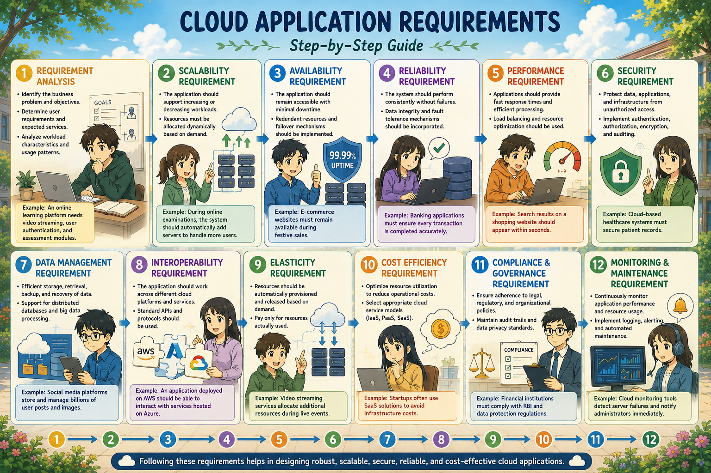
Click image to zoom full-resolution infographic posterEngineering Lifecycle Flowchart
Building robust cloud applications is not an ad-hoc process; it follows a rigorous 12-stage engineering pipeline:
Existing (Legacy) vs Extended (Cloud-Native) Architecture
Contrasting on-premises monolithic assumptions with modern loosely-coupled cloud systems.
Existing / Legacy Architecture
MonolithicDesigned for single physical on-premises servers or static virtual machines with local storage assumptions.
-
✕
Tightly Coupled: UI, business logic, and database access compiled as a single heavy binary war/jar.
-
✕
Local State Storage: Stores user sessions in local server memory; prevents multi-server scaling.
-
✕
Vertical Scaling (Scale-Up): Requires purchasing larger servers with more CPUs and RAM when traffic grows.
-
✕
Single Point of Failure (SPOF): A bug or crash in one module brings down the entire system.
Extended / Cloud-Native Architecture
DistributedRe-architected specifically to exploit cloud elasticity, managed services, and distributed networks.
-
✓
Loosely Coupled Services: Business capabilities decomposed into independent SOA or microservices.
-
✓
Stateless Compute: Sessions offloaded to Redis or DynamoDB; any container can serve any user request.
-
✓
Horizontal Scaling (Scale-Out): Adds inexpensive micro-VMs or containers dynamically behind load balancers.
-
✓
Self-Healing & Multi-AZ: Unhealthy containers automatically terminated and replaced in seconds.
Service Oriented Architecture (SOA) & Loose Coupling
Enabling heterogeneous enterprise components to collaborate through standardized service contracts.
What is Service Oriented Architecture?
Service-Oriented Architecture (SOA) is an architectural pattern where application components provide services to other components via a communication protocol over a network. Each service is a self-contained unit of functionality.
SOA's secret sauce is loose coupling. Loose coupling ensures that services have minimal direct dependency on each other. If the internal code, programming language, or database of one service changes, client applications and consumer services remain completely unaffected as long as the public API contract (WSDL / OpenAPI) is preserved.
Core Strategic Benefits of SOA in Cloud
Monolithic Architecture vs. SOA with ESB Backbone
Contrasting tightly bound monolithic deployments against autonomous services decoupled by an enterprise bus.
Application Architecture: Monolithic Tight Coupling vs. SOA with ESB
Comparing single-process monolithic deployment against decoupled service architectures.
SOA Architecture: Consumer, Provider, Registry & ESB
The fundamental interactions between services, consumers, and message bus middleware.
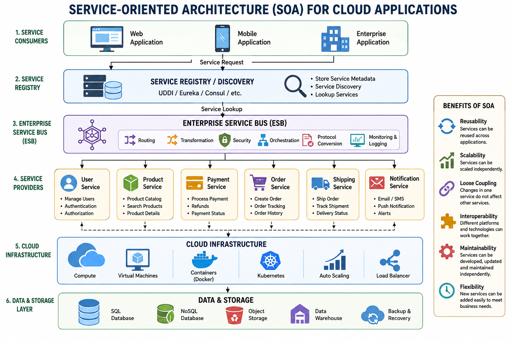
Click diagram to view enlarged architecture1. Service Consumer
The client or client-facing application requesting functionality. Can be a web app, mobile app, or another backend service. Example: Mobile customer placing an e-commerce order.
2. Service Provider
Builds, publishes, and executes the business service. Publishes interface contracts to the registry. Example: Payment Gateway Service processing credit card transactions.
3. Service Registry / Repository
Central directory where service metadata and addresses are published. Consumers dynamically discover endpoints. Examples: UDDI, Netflix Eureka, HashiCorp Consul.
4. Enterprise Service Bus (ESB)
Intelligent middleware backbone routing messages between consumers and providers. Handles message routing, data protocol transformation (XML to JSON), load balancing, and security token validation.
Enterprise Service Bus (ESB) Middleware Mechanics
The core intelligence bridging disparate legacy systems, service contracts, and modern cloud endpoints.
Intelligent Message Routing
Directs incoming requests to the appropriate service endpoint dynamically based on message payload content or header metadata.
- • Decouples client from physical server IP addresses and port numbers.
- • Supports Content-Based Routing (CBR) and multicast (fan-out) to subscribers.
Protocol & Data Transformation
Translates data formats between incompatible systems on the fly. Bridges legacy mainframe workflows with modern mobile and cloud applications.
- • Transforms legacy SOAP/XML payloads into lightweight modern REST/JSON responses.
- • Canonical schema mapping, field enrichment, and data validation.
Security & QoS Governance
Enforces centralized enterprise governance: authentication, authorization, rate limiting, token translation, and guaranteed transactional delivery.
- • Validates OAuth2 / JWT / SAML tokens before forwarding to internal private services.
- • Dead-letter queuing (DLQ), circuit breaking, and guaranteed once-only delivery.
Infographic: End-to-End E-Commerce SOA Workflow
Real-world order processing orchestrated through independent, loosely-coupled cloud services.
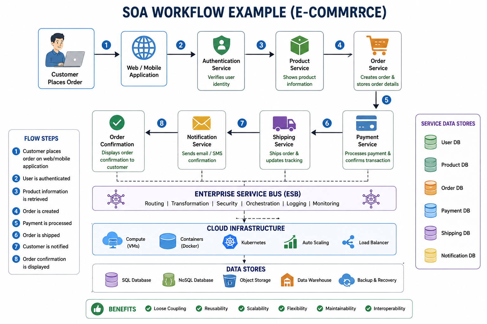
Click sequence diagram to enlarge in Lightbox6-Step SOA Order Execution Flow
Why Modern Enterprises Integrate SOA in Cloud
Strategic business agility, operational transparency, and simplified legacy modernization.
Access Management
Centralized identity policies, API keys, and rate limits managed at the gateway layer without touching backend code.
Ease of Monitoring
Each service exposes standardized healthcheck `/health` and Prometheus metrics for end-to-end distributed tracing.
Easy Data Exchange
Standard JSON over HTTP/2 eliminates proprietary binary RPC protocols and vendor lock-in.
Platform-Neutral
Enables micro-polyglot development: data science in Python, high-throughput auth in Go, legacy in Java.
High Reliability
Faults in non-critical services (e.g. recommendations) degrade gracefully without taking down checkout.
Minimizing Change Impact
Services can be updated, redeployed, and scaled independently with zero downtime via blue-green deployments.
SOA vs Microservices: Deep Architectural Comparison
Analyzing architectural trade-offs: enterprise service buses versus decentralized lightweight APIs.
| Feature | Service-Oriented Architecture (SOA) | Microservices Architecture (MSA) |
|---|---|---|
| Primary Focus | Enterprise-wide application integration and service reuse. | Single-application decomposition into autonomous units. |
| Middleware & Bus | Heavy smart middleware: Centralized Enterprise Service Bus (ESB). | "Smart endpoints, dumb pipes": Lightweight API gateways (Kong/Envoy). |
| Data Storage | Frequently shares a large enterprise relational database. | Database-per-service: Each microservice owns its private DB. |
| Communication | Heavy SOAP, WSDL, XML, JMS message queues. | Lightweight REST (JSON), gRPC (Protocol Buffers), Kafka. |
| Component Size | Larger, coarse-grained business services. | Small, single-responsibility fine-grained services. |
| Deployment | Monolithic application server clusters (WebLogic, WebSphere). | Docker containers orchestrated via Kubernetes (EKS, GKE). |
Parallelization: Principles & Computational Need in Cloud
What is Parallelization in Cloud Computing?
Parallelization is the process of dividing a large computational problem into smaller, independent, or concurrent sub-tasks that can be executed simultaneously across multiple processing cores or distributed cloud nodes, and then recombining their partial results.
Cloud Computing vs Parallel Computing
| Aspect | Cloud Computing | Parallel Computing |
|---|---|---|
| Location | Multiple global datacenters | Single server rack or cluster |
| Memory | Strictly distributed memory | Shared memory or distributed |
| Communication | Network RPC / Message queues | High-speed system bus / InfiniBand |
| Primary Goal | On-demand utility & elasticity | Raw processing speed & throughput |
Amdahl's Law Context
The theoretical speedup of parallelization is capped by the sequential portion of the program: Speedup = 1 / ((1 - P) + (P / N)). Maximizing parallel efficiency requires minimizing non-parallelizable synchronization points.
Infographic: Master Cloud Parallelization Architecture
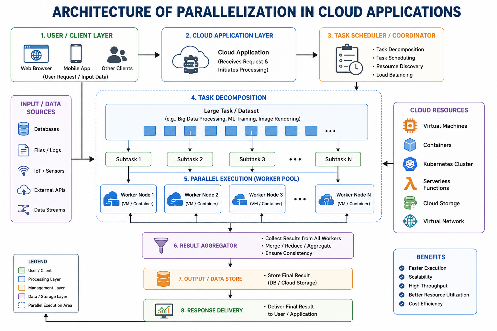
Click to inspect full architecture schematic in LightboxArchitectural Components
The 7-Step Parallelization Execution Pipeline
End-to-end distributed compute flow: from initial problem partitioning to consolidated output reduction.
The 7-Step Parallelization Pipeline for Cloud Computing Applications
Architectural sequence for dividing monolithic sequential tasks into highly concurrent distributed cloud executions.
The 7 Pipeline Stages: Deep Architectural Breakdown
How cloud schedulers and compute runtimes handle data decomposition, communication, and synchronization.
1. Decomposition (Partitioning)
Breaking down the large computational problem or dataset into smaller, independent sub-problems (Domain decomposition for data arrays, Functional decomposition for algorithms).
2. Assignment & Mapping
Mapping decomposed sub-tasks to specific physical or virtual processors to maximize load balancing, minimize cross-node traffic, and prevent straggler bottlenecks.
3. Orchestration & Scheduling
Ordering task execution based on Directed Acyclic Graph (DAG) dependencies, dynamic priority queues, and real-time node availability.
4. Inter-Process Communication
Exchanging intermediate parameters and boundary ghost cells between worker nodes via high-throughput message passing (MPI / gRPC) or zero-copy shared memory.
5. Synchronization
Coordinating concurrent worker threads using hardware barrier synchronization, mutex locks, and atomic operations to prevent race conditions and memory hazards.
6. Execution & 7. Aggregation
Worker nodes execute compiled instructions concurrently across SIMD/MIMD units. The aggregation stage reduces partial outputs into the final verified answer.
Multi-Core Computing vs Symmetric Multiprocessing (SMP)
Multi-Core Computing
Single Chip ICA computer processor integrated circuit (IC) containing two or more separate processing cores (ALUs/execution units) embedded on the same silicon die.
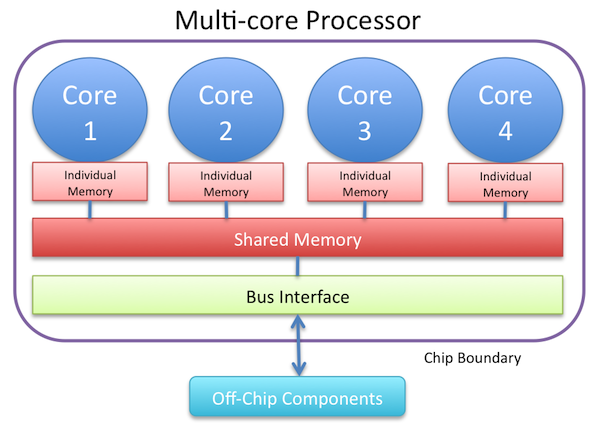
- • Cores share on-die L2/L3 cache and system memory bus.
- • Extremely low communication latency between cores.
- • Examples: Intel Core i9, AMD EPYC, Apple Silicon M3.
Symmetric Multiprocessing (SMP)
Multi-Socket BusA multiprocessor computer hardware and software architecture where two or more identical physical processors connect to a single shared main memory under one Operating System.
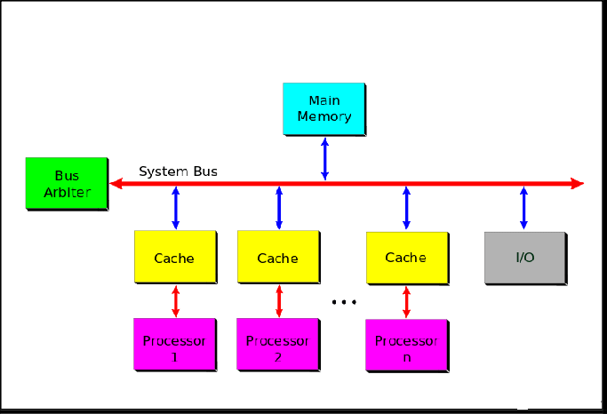
- • The OS treats all processors equally without master/slave hierarchy.
- • Any idle CPU can pick up any ready process thread.
- • Relies on cache-coherence protocols (MESI) over the memory bus.
The 4 Classic Levels of Parallel Computing
1. Bit-Level Parallelism
Register Word SizeBased on increasing processor word size (e.g. 8-bit → 16-bit → 32-bit → 64-bit). Reduces the number of clock instructions the processor must execute on large numbers.
2. Instruction-Level Parallelism (ILP)
Instruction PipeliningExecutes multiple machine instructions of a single program simultaneously using pipelining and superscalar execution units.
i and i+1 on parallel ALU units simultaneously, accelerating execution by up to i times.
3. Data-Level Parallelism (DLP)
SIMD / BatchingThe exact same algorithmic operation is applied concurrently across multiple chunks of input data distributed among many processors (SIMD - Single Instruction Multiple Data).
4. Task-Level Parallelism (TLP)
MIMD / ThreadsDifferent computing systems or threads execute completely distinct tasks or functions simultaneously on the same or different data (MIMD).
Techniques & Solutions in Cloud Parallel Computing
Application Checkpointing
Periodically records the complete in-memory execution state, registers, and data structures of all running components to persistent distributed storage.
Automatic Parallelization
Compiler-driven conversion of traditional serial single-threaded source code into multi-threaded parallel machine code without manual thread synchronization by the developer.
Parallel Programming Models
Classified into two foundational memory paradigms:
- 1. Distributed Memory: Nodes communicate strictly through explicit message passing (MPI / gRPC).
- 2. Shared Memory: Threads manipulate shared memory addresses via pthreads / OpenMP locks.
Advantages vs Challenges in Cloud Parallelization
Key Advantages
High Performance-
✓
Faster Execution: Drastic reduction in wall-clock runtimes for complex computational tasks.
-
✓
Improved Scalability: Seamlessly absorbs growing user workloads by distributing compute load.
-
✓
Better Resource Utilization: Prevents expensive multi-core cloud instances from idling.
-
✓
Big Data Processing: Unlocks real-time streaming analytics on petabytes of incoming data.
Core Disadvantages & Overhead
Engineering Complexity-
✕
Synchronization Overhead: Thread locks, barriers, and waiting times can degrade overall speedup.
-
✕
Communication Delay: Transmitting data across cloud network cables introduces measurable latency.
-
✕
Load Imbalance: If one sub-task takes 10x longer, other processors remain idle waiting at the barrier.
-
✕
Complex Debugging: Race conditions, deadlocks, and non-deterministic heisenbugs are difficult to reproduce.
Multi-Tier Architecture: Separation of Concerns
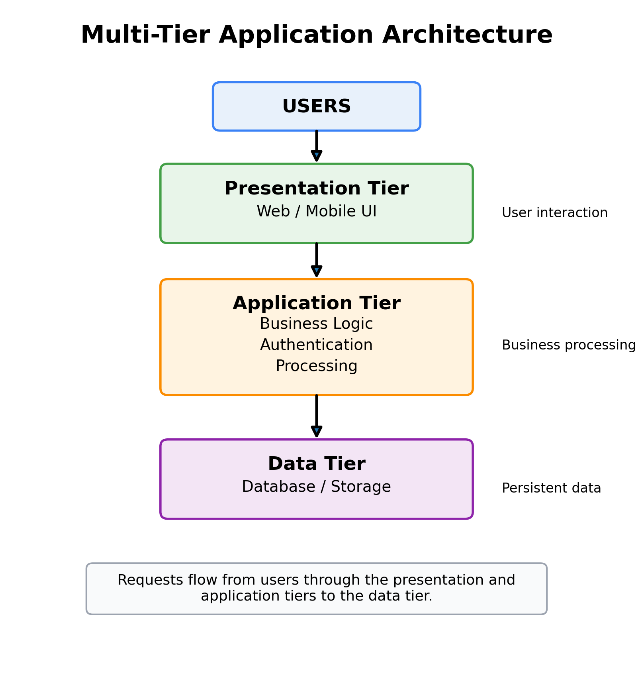
Click diagram to enlarge in high resolutionWhat is a Tier?
A tier is a logical and physical division of an application responsible for a particular type of processing. Instead of building software as one monolithic block, we divide it into separate tiers that communicate across network boundaries.
Ensures decoupled, independently scalable components that can be separately developed, tested, managed, and maintained by distinct teams (e.g. Frontend team vs Backend team vs DBA database administrators).
Understanding Multi-Tier Architecture: The Toy Robot Analogy
The Standalone Robot
Imagine you have a toy robot that can do everything independently. It has buttons on its chest for you to press, internal circuitry to process commands, and local memory chips.
Remote-Controlled Robot
Now imagine you control the robot with a handheld remote control. The remote (client) sends commands over radio waves to the robot (database server), which executes the actions.
Smartphone App + Cloud Hub
You tap commands on your smartphone app (Tier 1). The app sends requests to a Smart Hub/Server (Tier 2). The Hub processes rules and instructs the robot hardware (Tier 3).
The Fleet of Specialized Robots
Imagine a whole team of specialized robots working in harmony: navigation robots, sensing robots, vision robots, and warehouse lifting robots coordinated via central dispatch.
Two-Tier Architecture: Structure, Advantages & Limitations
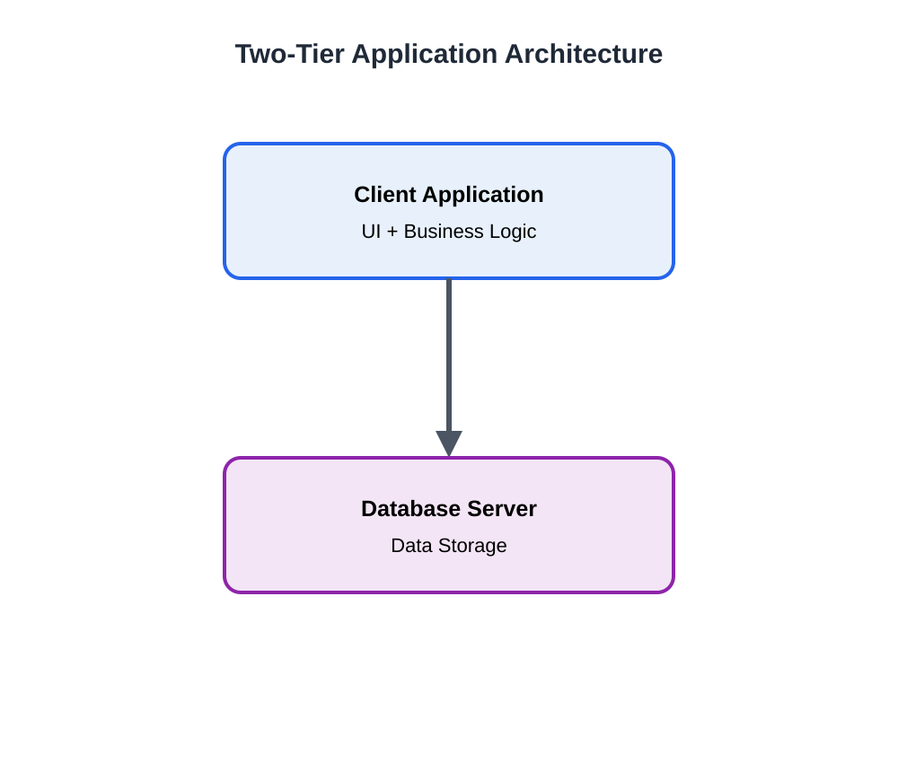
Click diagram to enlargeArchitecture Overview
Client Tier directly opens TCP database sockets to the Database Server Tier.
Thick Client: Client PC executes the UI and business logic.
Thin Client: Client PC executes UI; business logic runs as stored procedures in DB.
Advantages
- • Simple to develop and deploy.
- • Minimal communication overhead.
- • Ideal for small LAN office apps.
- • Direct high-speed DB queries.
Limitations
- • Difficult to scale beyond ~100 users.
- • DB connection pool exhaustion.
- • Tight coupling with client OS.
- • Direct DB access creates security risks.
The Three-Tier Architecture Breakdown
Presentation Tier
Responsible for user interface rendering, accepting user inputs, and displaying formatted data to the client.
Application / Logic Tier
The "brains" of the application. Processes requests, executes business rules, performs calculations, and coordinates data access.
Data Storage Tier
Responsible for persistent storage, indexing, and retrieval of structured and unstructured application state.
Infographic: Master N-Tier Architecture in Cloud
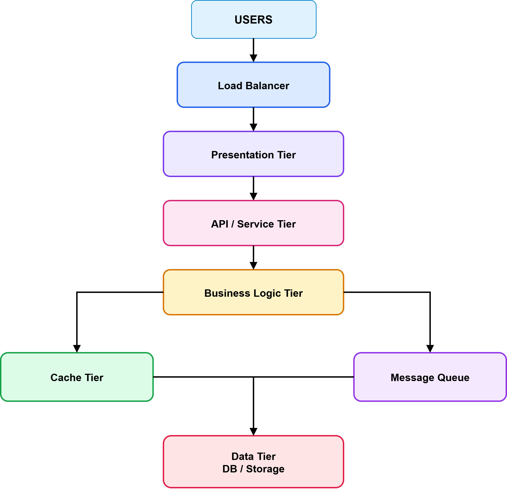
Click diagram to view ultra-high-resolution poster in LightboxEnterprise N-Tier Cloud Breakdown
Multi-Tier Evolution: Traditional 3-Tier VMs vs. Serverless Cloud-Native
Contrasting static server provisioning with fully managed, event-driven serverless cloud topologies.
Multi-Tier Architecture: Traditional 3-Tier VM Stack vs. AWS Serverless Multi-Tier
Contrasting static server provisioning with fully managed, event-driven serverless cloud topologies.
AWS Serverless Multi-Tier Architecture (API Gateway + Lambda)
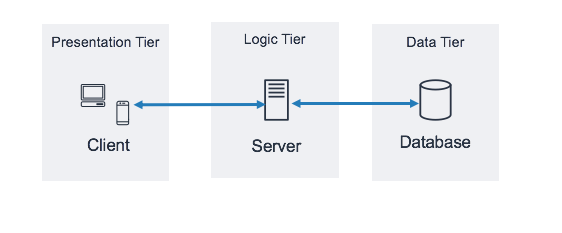
Click diagram to view full AWS architecture schematicServerless Presentation Tier
S3 + CloudFront + CognitoStatic Single Page Applications (SPA) hosted directly in an Amazon S3 bucket, globally distributed via Amazon CloudFront CDN with SSL/TLS. User authentication handled via Amazon Cognito.
Serverless Logic Tier
API Gateway + AWS LambdaAmazon API Gateway exposes REST endpoints with throttling, CORS, and auth validation. Triggers event-driven AWS Lambda functions that execute on-demand without managing servers.
Serverless Data Tier
DynamoDB / Aurora ServerlessAmazon DynamoDB (managed NoSQL with single-digit millisecond latency) or Amazon Aurora Serverless v2, scaling storage and compute units seamlessly.
Why Serverless Transforms the Logic Tier
AWS Lambda Architectural Benefits
- • Zero Operating System Management No OS to choose, configure, secure, patch, or maintain. AWS handles the entire execution sandbox under the hood.
- • Zero Server Right-Sizing & Scaling No need to guess instance counts. Lambda scales horizontally from 0 to 10,000 concurrent executions in milliseconds.
- • Eliminates Over/Under-Provisioning Financial Risk Pay strictly for execution time measured in 1ms increments. When zero users make requests, the compute cost is exactly $0.00!
Amazon API Gateway Capabilities
- • Unified API Front Door Handles CORS, SSL termination, request payload validation, and route mapping to internal microservices.
- • Traffic Protection & Rate Limiting Defends backend databases by setting token bucket throttling (e.g. 5,000 requests/sec with burst to 10,000).
- • Built-in Edge Response Caching Caches frequent API responses at CloudFront edge locations, reducing Lambda invocations and database load.
Presentation & Data Tier Cloud Offerings
Amazon Cognito
Serverless user identity and access control pool. Scales to millions of users, supports social sign-in (Google, Facebook, Apple) and enterprise SAML 2.0.
S3 + CloudFront + Route 53
S3 static site hosting combined with CloudFront edge points of presence globally. Amazon Route 53 maps custom brand domains to CDN endpoints.
Amazon DynamoDB
Fully managed, multi-region, multi-active key-value and document NoSQL database. Delivers consistent single-digit millisecond response times at any scale.
Aurora Serverless & Secrets
MySQL/PostgreSQL compatible relational DB scaling dynamically in ACUs (Aurora Capacity Units). AWS Secrets Manager secures database credentials.
Programming Support for AWS: The Core Stack
Managed relational database service supporting 6 engines with automated patching, backup snapshots, Multi-AZ failover, and messaging interfaces.
Elastic Compute Cloud providing scalable virtual servers on demand with custom CPU, memory, GPU, and network configurations.
Simple Storage Service offering 99.999999999% (11 9's) durability for media files, static assets, and big data lakes with fine-grained bucket policies.
Managed Hadoop and Spark cluster framework allowing rapid parallel processing of petabytes of analytical data.
Early NoSQL data store (SimpleDB) evolved into ultra-fast DynamoDB for schema-free, highly available key-attribute data.
Simple Queue Service (decoupled asynchronous buffering) and Simple Notification Service (fanout pub/sub push notifications).
Amazon RDS Setup: Engine Options & Version Matrix
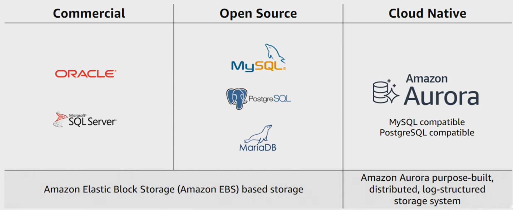
Click console screenshot to zoom in Lightbox6 Supported Enterprise Engines
Amazon RDS Setup: Instance Sizing & Storage Types
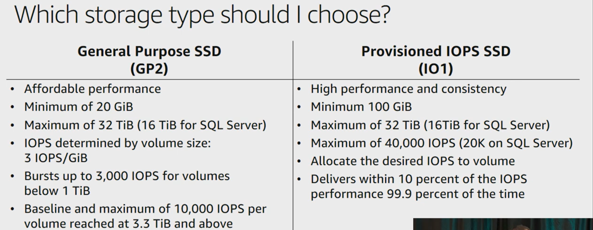
Click console screenshot to zoom instance optionsDB Instance Class Families
Amazon RDS Setup: Multi-AZ High Availability & VPC Security
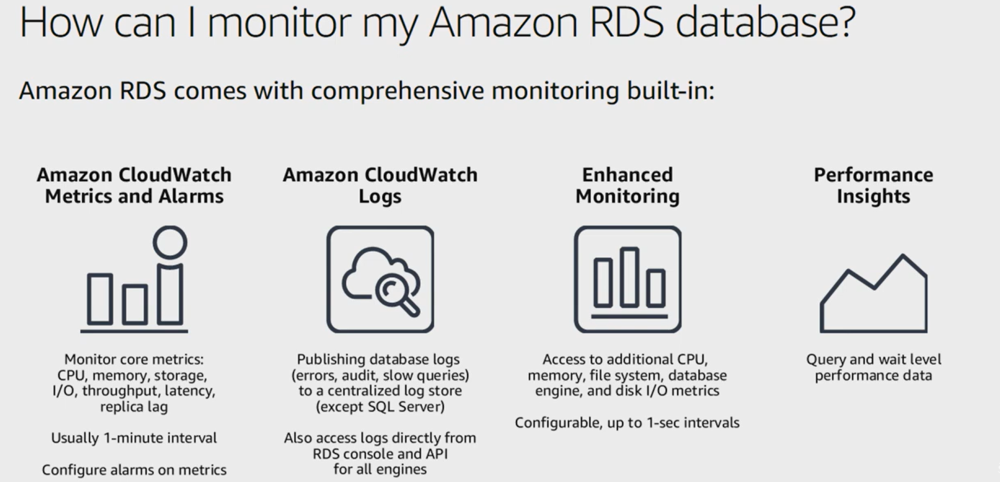
Click console screenshot to zoom Multi-AZ settingsEnterprise Durability & Security
Amazon RDS: Multi-AZ Synchronous Replication & Automated Failover
Under the hood of AWS automated 60-120s database DNS failover across physically distinct AZs.
Amazon RDS Multi-AZ Synchronous Replication & Automated DNS Failover Flow
High-availability relational database architecture with physical multi-Availability Zone isolation.
AWS Cloud Development Kit (AWS CDK) Architecture
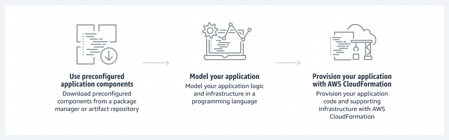
Click diagram to view full CDK architecture in LightboxWhat is AWS CDK?
The AWS Cloud Development Kit (AWS CDK) is an open-source software development framework to define cloud application resources using familiar programming languages (TypeScript, Python, Java, C#, Go).
cdk synth → cdk deploy
Programming Support: Java & Python on AWS
1. Java on AWS
Enterprise GradeJava is an object-oriented language with fewer dependencies and platform portability ("write once, run anywhere"). AWS offers first-class support through the AWS SDK for Java 2.x.
2. Python on AWS (Boto3)
Cloud-Native StandardPython is a dynamic, high-level, open-source language. Its clean syntax and massive scientific/AI ecosystem make it the undisputed favorite for cloud scripting and serverless.
Programming Support: Ruby, PHP & Node.js on AWS
Ruby on AWS
Popular object-oriented scripting language with expressive syntax, renowned for Ruby on Rails web applications.
PHP on AWS
Open-source server-side language powering over 75% of web servers, content management systems (WordPress, Drupal) and Laravel applications.
Node.js on AWS
JavaScript runtime built on Chrome's V8 engine. Event-driven, non-blocking I/O model ideal for data-intensive real-time applications.
Google App Engine (GAE): Architecture & Execution Model
Google App Engine Foundations
Google App Engine (GAE) was one of the earliest PaaS offerings (launched in 2008). It allows developers to build and host web applications on Google's scalable data center infrastructure without managing servers.
GAE Ecosystem Services
Google BigTable: Distributed Multidimensional Sorted Map
The Exact Technical Definition of BigTable
The map is indexed by a row key, a column key, and a timestamp:
Powers Google Search indexing, Google Earth, Google Maps, YouTube, and Gmail. Designed to scale reliably into petabytes across thousands of commodity machines.
3 Architectural Dimensions
family:qualifier). Access control and compression are enforced at family boundaries.
Aneka Cloud Application Platform & Microsoft Azure
Aneka Cloud Application Platform
Grid & Cloud PaaSAneka (developed by Manjrasoft / Dr. Rajkumar Buyya) is a market-oriented Cloud Application Development Platform (PaaS) for building enterprise grids and clouds.
2. Thread Programming: Distributed multi-threading.
3. MapReduce Programming: Big data distributed mapping.
Microsoft Azure Platform
Hyperscale CloudMicrosoft's comprehensive cloud platform providing hundreds of IaaS and PaaS services deeply integrated with enterprise Active Directory.
6 Principles of Cloud Architecture: Principles 1 to 3
Reasonable Deployment
Choosing the optimal combination of public cloud, private cloud, or hybrid architecture based on security, regulatory compliance, and cost.
Business Continuity
Architecting the system across 3 distinct operational dimensions:
Elastic Expansion
Tightly coupled systems cannot scale. Elasticity demands systematic component decoupling:
6 Principles of Cloud Architecture: Principles 4 to 6
Performance Efficiency
Continuously enhance application responsiveness and resource throughput across 3 pillars:
Security Compliance
Satisfy internal security defense and regulatory compliance simultaneously:
Continuous Operation
Automating observability, autonomic self-healing, and proactive cost optimization:
Unit 3 Master Summary & High-Yield Exam Notes
Cloud Layers & SOA
- • IaaS: Hardware/virtualization foundation (Gmail 8GB 90% utilization).
- • PaaS: Developer runtime & middleware (GAE, Elastic Beanstalk).
- • SaaS: Multi-tenant web software subscription (Salesforce, O365).
- • SOA: Loose coupling via Consumer, Provider, Registry, and ESB bus.
Parallel & Multi-Tier
- • 7 Pipeline Steps: Decomposition, Mapping, Scheduling, Communication, Sync, Execution, Aggregation.
- • 4 Parallel Types: Bit-level, ILP, DLP, Task-level (TLP).
- • Robot Toy Analogy: 1-Tier (standalone), 2-Tier (remote control), 3-Tier (smartphone hub), N-Tier (robot fleet).
- • AWS Serverless 3-Tier: S3/CloudFront (Presentation) + API GW/Lambda (Logic) + DynamoDB/Aurora (Data).
RDS, CDK & 6 Principles
- • RDS 6 Engines: Aurora, MySQL, PostgreSQL, MariaDB, Oracle, SQL Server.
- • RDS HA: Multi-AZ synchronous standby (<60s auto-failover).
- • CDK Languages: Java (enterprise), Python (Boto3), Ruby, PHP, Node.js (fast spinup).
- • 6 Principles: Reasonable Deployment, Continuity, Elasticity, Performance, Security, Continuous Ops.